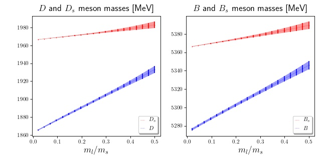

Description¶
To describe the mass of a generic heavy-light pseudoscalar meson simulated on a lattice with lattice spacing a and volume V, the Fermilab Lattice, MILC, and TUMQCD uses a function as
\[M_{H_x} (\{m_h, m_x\}, \{m'_l, m'_l, m'_s, m'_c\}, \{a, V\}; \{p_1,\cdots,p_{67}\}),\]which takes as inputs three sets of values and contains 67 parameters. The inputs are the simulation masses of the valence heavy and light quarks (in the first braces), the simulation masses of four flavors of sea quarks (in the second braces), and the lattice spacing and volume (in the third braces). Note that the lattice simulations are usually performed at the isospin limit, where the masses of two light quarks (up and down quarks) are equal. We use the term light quark to call these two quarks at the isospin limit and \(m_l\) to denote their masses.
The 67 parameters of \(M_{H_x}\) are determined statistically by fitting the function to lattice-QCD data. The continuum and infinite-volume limits of the function are then obtained by setting \(a = 0\) and \(V = \infty\).
One can use the function \(M_{H_x}\) to explore how a heavy-light meson mass depends on the masses of its components. For applications in ChPT, one may be interested to fix the heavy and strange quark masses and vary the light quark mass. This reduces the function \(M_{H_x}\) to a one-variable function, which is still relatively complicated because of non-analytic terms stemming from chiral perturbation theory; see Ref1 and Ref2 for details. (Note that the non-analytic terms are very small in practice.) When quark masses are neither too big nor too small, the nonanalytic terms can be replaced with polynomials.
This module provides four (cubic) polynomial functions to describe the masses of \(D, D_s, B\) and \(B_s\) mesons in terms of the light quark mass in units of the strange quark mass, i.e. in terms of \(x = m_l/m_s\). (As said above, the strange, charm, and bottom masses are set to their physical values.) The functions take \(x = m_l/m_s\) as input and return the mass of the corresponding mesons (in MeV) and their one-sigma uncertainties. The pacakge gvar is used to handle the values and their errors. If an array of light quark masses (in units of strange mass) are provided, each function returns an array of gvar variables that contains the correlation between variables.
The following figure illustrates the \(D, D_s, B\) and \(B_s\) meson masses against \(x = m_l/m_s\):
The error bars illustrate the results obtained from the analysis of the project on Ref1, and the error bands are derived from the effective formulas of this package. The domain of validity of the functions are restricted to \(x\in[0.02, 0.5]\).
For the \(D\) system, e.g. with quark mass ratios 0.1, 0.2, and 0.3, one can simply use:
>>> from meson_mass import Model >>> Model('D').predict([0.1, 0.2, 0.3]) >>> array([1876.81(97), 1890.8(1.3), 1904.6(1.5)], dtype=object)where output is in MeV and provided as an array of gvar variables. (One can use gvar.mean(…) gvar.sdev(…) to access the mean and one-sigma error in the output.) Similarly, for \(D_s, B\) and \(B_s\) systems, we have
>>> Model('Ds').predict([0.1, 0.2, 0.3]) >>> array([1968.87(25), 1971.87(46), 1975.11(94)], dtype=object)>>> Model('B').predict([0.1, 0.2, 0.3]) >>> array([5288.2(1.3), 5302.7(1.6), 5316.9(2.0)], dtype=object)>>> Model('Bs').predict([0.1, 0.2, 0.3]) >>> array([5369.82(41), 5374.25(83), 5378.9(1.4)], dtype=object)Command line inteface is available too:
$ meson_mass.py --model D 0.1 0.2 0.3 $ [1876.81(97) 1890.8(1.3) 1904.6(1.5)] $ $ meson_mass.py --model Ds 0.1 0.2 0.3 $ [1968.87(25) 1971.87(46) 1975.11(94)] $ $ meson_mass.py --model B 0.1 0.2 0.3 $ [5288.2(1.3) 5302.7(1.6) 5316.9(2.0)] $ $ meson_mass.py --model Bs 0.1 0.2 0.3 $ [5369.82(41) 5374.25(83) 5378.9(1.4)]The parameters of this module correspond to a QCD-only world; in lattice simulations of heavy-light mesons, the QED effects are not included. To tune the charm and bottom quark masses, the analysis uses the experimental values of \(D_s\) and \(B_s\) masses, but it subtracts their QED contributions in a specific scheme. To compare the results of this module with experimental values, which include QED effects, an option is provided to adjust the outputs depending on the charges of the heavy and light components of the meson. For the masses of \(D_s\) and \(B_s\) mesons, we have
>>> m_ud = 0.0368 # average of u and d mases in unit of the strange mass >>> Model('Ds', QCD_only=False, e_heavy=2/3, e_light=1/3).predict(ml) >>> 1968.27(10) >>> Model('Bs', QCD_only=False, e_heavy=-1/3, e_light=1/3).predict(ml) >>> 5366.82(22)These results are equal to the experimental masses \(M_{D_s} = 1968.27(10)\) and \(M_{B_s} = 5366.82(22)\) that are used as inputs to fix the charm and bottom quark masses, respectively. (It is not surprising that this module gives such a precise value for these two quantities.)
As a concluding remark, it should be emphasized that the effective formula are expected to be used at \(x\in[0.02, 0.5]\). The results of the code outside the given domain cannot be trusted. For instance, evaluating the \(D\) mass at the chiral limit, one obtains:
$ meson_mass.py --model D 0 $ 1862.45(38)while the correct value reported in eq (5.31) Ref1 is 1862.3(1.3) MeV. This rapid increase of uncertainty indicates the importance of non-analytic terms in approaching the chiral limit.